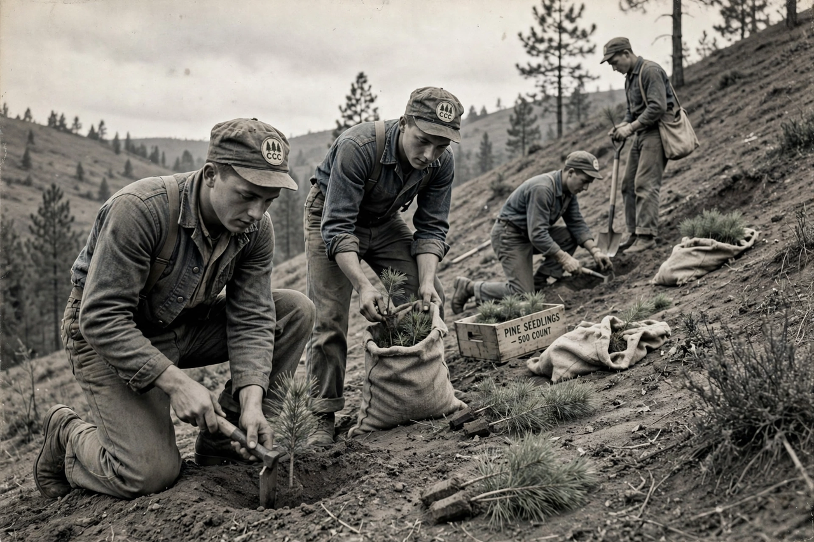

| Civilian Conservation Corps | |
 | |
| Founded | 31 March 1933 |
|---|---|
| Dissolved | 1942 |
| Type | Public work relief programme |
| Enrollees | About 3 million young men in total |
| Pay | $30 per month, of which $25 sent home |
The Civilian Conservation Corps (CCC) was a voluntary public work relief program in the United States for unemployed, unmarried men, operating from 1933 to 1942. A signature programme of President Franklin D. Roosevelt's New Deal, enacted during the First Hundred Days, it provided jobs in natural resource conservation — planting trees, building trails and campgrounds, fighting fires and controlling erosion — while relieving families hard hit by the Great Depression.
The Emergency Conservation Work Act was signed on 31 March 1933, and the first enrollee was inducted within days. The programme was run jointly: the Department of Labor recruited, the Army organised and ran the camps (an experience that proved valuable for mobilising in the Second World War), and the Departments of Agriculture and the Interior directed the work. Enrollees, mostly aged 18–25, signed up for six-month terms, lived in camps of about 200 men, and were paid $30 a month, of which $25 was sent directly to their families.
At its peak in 1935 the CCC ran some 2,600 camps employing about 500,000 men. Over nine years roughly three million men participated. They planted more than three billion trees — the CCC is credited with planting half of all trees planted in US history — built trails, shelters and bridges in national and state parks, stocked fish, drained swamps and fought forest fires and soil erosion during the Dust Bowl. The programme also ran education classes; tens of thousands of illiterate enrollees learned to read. Segregation was practised in most camps, and Native American enrollee divisions worked on reservations. Public support was high, but with wartime full employment the CCC was defunded in 1942 and dissolved. It inspired later programmes such as the Peace Corps, Job Corps and modern service and conservation corps.